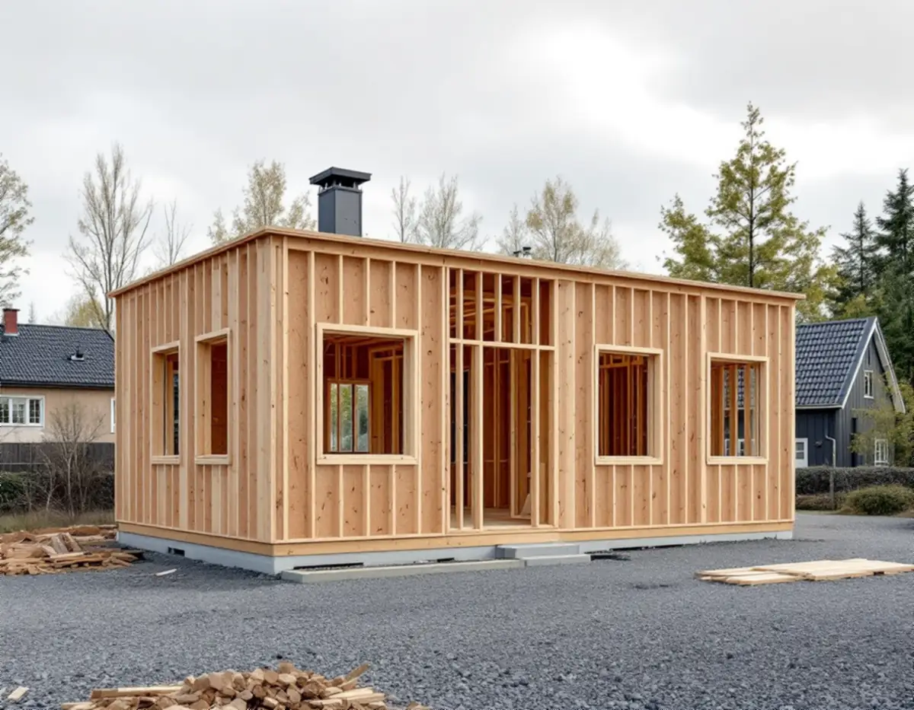

Platsbesök
Vi tittar på tomten, gränserna och var ledningarna kan gå in.

Innan ett nytt hus eller en större tillbyggnad i Upplands Väsby kan ritas klart behöver tre saker vara på plats: en karta som håller för bygglovet, en plan för hur huset ansluts till vatten och avlopp och en tydlig bild av var tomtgränsen går.
Beskriv jobbet kort.
Något blev fel. Kontrollera uppgifterna eller ring 08 12 410 276.
Vi tittar på jobbet på plats innan du får offert.
Du ser vad som ingår och vad det kostar.
Vi drar av ROT direkt och sköter ansökan.
Geal Entreprenad AB, Bromma. Org.nr 559303-7566.
Geal Entreprenad AB bygger nytt, bygger till och bygger om som total entreprenad, och här är hur kommunen hanterar de frågorna.
Situationsplanen ska vara i skala 1:400 och visa fastighetsgränser, alla befintliga byggnader och var det nya ska placeras. Vilken karta den ritas på beror på projektet. Kommunens geodataenhet tar fram en nybyggnadskarta för ny huvud- eller komplementbyggnad som ska anslutas till vatten och avlopp. Den visar fastighetsgränser, detaljplanebestämmelser, nivåkurvor, anslutningspunkten för vatten och avlopp och arbetsfix, och en fältkontroll ingår.
Kommunen skriver att hela nybyggnadskartan ska ingå i situationsplanen och att inga ändringar får göras i den. Detaljplanen bör ha vunnit laga kraft och fastighetsbildningen vara klar innan den slutliga kartan upprättas. Annars märks kartan som preliminär, med texten att tomten är tolkad från ett förslag till detaljplan eller att förrättning pågår.
För mindre tillbyggnader och tillbyggnader mer än 10 meter från fastighetsgränsen räcker en förenklad nybyggnadskarta, som ritas direkt från baskartan utan fältkontroll. För enklare åtgärder som ett uterum, ett skärmtak, en mur eller ett plank kan ett kartutdrag räcka. Det innehåller inga planbestämmelser.
Ett nytt hus ansluts genom en servisansökan till kommunens VA-enhet, via e-tjänst eller blankett. Godkänns ansökan drar VA-enheten fram servisledningarna till fastighetsgränsen, och läget för förbindelsepunkten bestäms efter samråd med fastighetsägaren. Förbindelsepunkten är gränsen mellan den allmänna delen och fastighetens del av ledningen och ligger vanligtvis cirka 0,5 meter utanför fastighetsgränsen.
Dagvatten och dräneringsvatten får inte kopplas till spillvattenservisen, och en egen brunn får inte kopplas ihop med kommunens vatten. Vill två eller flera fastigheter dela förbindelsepunkt godkänns det generellt inte för vatten, men det kan godkännas för spill- och dagvatten om det finns särskilda skäl. Då måste fastigheterna ha bildat en gemensamhetsanläggning, som söks hos Lantmäteriet. Förhållandet mellan fastighetsägaren och kommunen regleras i ABVA, som gäller sedan 1 april 2009.
Upplands Väsby har ingen egen lantmäterimyndighet. Fastighetsbildningen sköts av Lantmäteriet i Stockholm, men genom ett avtal kan kommunens geodataenhet göra fältarbetet med mätning och markering vid en förrättning. Avstyckning, överföring av mark mellan fastigheter, bestämning av en gräns och bildande av en gemensamhetsanläggning söks hos Lantmäteriet.
Inom detaljplan ska tomtstorlekarna vara reglerade, och avstyckningen prövas genom ansökan till Lantmäteriet. Utanför detaljplan prövas en avstyckning i stället genom ett förhandsbesked hos kommunens bygglovsenhet. Ett positivt förhandsbesked kan bifogas ansökan till Lantmäteriet, som då inte behöver hämta in kommunens medgivande. En rätt att använda grannens mark, till exempel för en ledning, kan säkras med servitut, antingen genom avtal eller genom beslut i en lantmäteriförrättning.
Huvudregeln är bygglov för tillbyggnader, men kommunen beskriver ett undantag: tillbyggnader utan lov får tillsammans omfatta högst 30,0 kvadratmeter brutto- eller öppenarea på tomten. Tidigare attefallstillbyggnader, takkupor och skärmtak som byggts utan lov räknas in. Kommunens exempel är att ett skärmtak och en tillbyggnad på 10 kvadratmeter vardera lämnar 10 kvadratmeter kvar. Tillbyggnaden får inte gå över husets taknock och ska ligga minst 4,5 meter från tomtgränsen om inte grannen skriftligt godkänner något annat.
Bygglov krävs ändå om huset är kulturhistoriskt värdefullt, om tillbyggnaden hamnar på allmän plats eller i ett särskilt värdefullt område, eller om detaljplanen har utökad lovplikt. Påverkas en bärande vägg, eller installeras vatten och avlopp, eldstad eller ventilation, kan det krävas anmälan. Ska marken höjas eller sänkas mer än 0,5 meter inom detaljplan krävs marklov, och då räcker vanligtvis en situationsplan och en marksektion. Mer om tillbyggnad finns på en egen sida.
Vi tittar på tomten, gränserna och var ledningarna kan gå in.
Detaljplanen kontrolleras och rätt karta beställs till situationsplanen.
Mark, grund, stomme, VA och installationer redovisas var för sig.
Bygglov eller anmälan med kontrollplan, och servisansökan till VA-enheten.
Startbesked, sedan bygget med en kontakt för alla hantverkare.
Vi förbereder underlaget till slutbeskedet.
Rotavdraget är 30 procent av arbetskostnaden, högst 50 000 kronor per person och år och högst 75 000 kronor tillsammans med rutavdrag. Material och resor ingår inte.
En tillbyggnad ger avdrag om den sitter ihop med husets yttervägg till minst 75 procent eller har en dörr emellan. Markarbeten för att försörja ett befintligt hus med vatten och avlopp kan ge avdrag, men ett helt nytt hus ger inte avdrag. Vi drar av rotavdraget direkt på fakturan.
Grundläggning, avståndet till förbindelsepunkten, markens höjdskillnader och husets storlek väger tyngst. Efter ett gratis platsbesök får du ett skriftligt kostnadsförslag.
Total entreprenad för villan.
Byggfirma →Takbyte, takbesiktning och plåtarbeten.
Takläggare i Upplands Väsby →Bollstanäs, Vilunda och Runby.
Takrenovering i Upplands Väsby →Potten, VA-avgiften och Bollstanäs.
Attefallshus i Upplands Väsby →Radhus, suterräng och samfälld VA.
Badrumsrenovering i Upplands Väsby →Sekelskiftesvillorna längs Gamla vägen.
Fasadmålning i Upplands Väsby →Radhus från 70-talet och hus från bomässan.
Fasadrenovering i Upplands Väsby →Inflygning, trafik och tystare fönster i Väsby.
Fönsterbyte i Upplands Väsby →Kedjehusens fönster, kulör och beslag.
Fönsterrenovering i Upplands Väsby →Kedjehus, suterräng och radon.
Golvläggare i Upplands Väsby →Slipa trägolvet i radhuset på platta.
Golvslipning i Upplands Väsby →Radhus, kedjehus och atriumhus.
Köksrenovering i Upplands Väsby →Radhus, kedjehus och villor i Väsby.
Målare i Upplands Väsby →Rännor, stuprör och radhusplåt i Väsby.
Plåtslagare i Upplands Väsby →Altan, plank och förråd vid radhus och kedjehus.
Snickare i Upplands Väsby →Nytt tak, solceller och väderradarn.
Takbyte i Upplands Väsby →Radhusen och plasttapeten.
Tapetsering i Upplands Väsby →Radhus, kedjehus och utpekade områden.
Tillbyggnad i Upplands Väsby →Äldre villor, radhus och varsamhet.
Totalrenovering i Upplands Väsby →Eller ring 08 12 410 276, mån–fre 08–17.
Beskriv jobbet kort.
Något blev fel. Kontrollera uppgifterna eller ring 08 12 410 276.